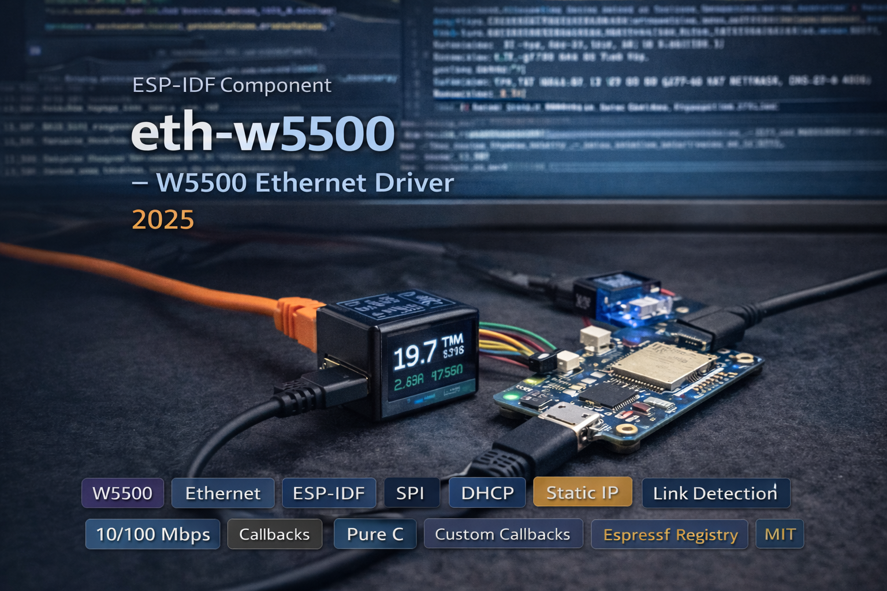

Pure C W5500 Ethernet driver for ESP-IDF with zero Arduino dependencies. 19-function API covering SPI initialization, link detection, DHCP/static IP, status callbacks, MAC auto-detection, hostname management, and external SPI bus sharing - all configured through runtime structs with no Kconfig.

eth_w5500_init() handles the entire Ethernet bring-up in one call: initializes the SPI bus (or attaches to an existing one when MOSI/MISO/CLK are set to -1), creates the W5500 MAC and PHY drivers, installs the Ethernet driver, creates the esp_netif network interface, registers ETH_EVENT and IP_EVENT handlers, configures DHCP or static IP, and starts the driver. The 15-field config struct has sensible defaults via ETH_W5500_DEFAULT_CONFIG().
For shared SPI buses, ETH_W5500_EXTERNAL_SPI(host, cs_pin) skips bus initialization entirely so the W5500 can coexist with other SPI peripherals like SD cards or displays. The SPI clock is validated to the W5500's 8–25 MHz range.
The driver tracks 5 states: STOPPED, STARTED (running but no link), LINK_UP (cable connected, waiting for IP), GOT_IP (fully connected), and ERROR. Register a callback via eth_w5500_on_status_change() to get notified asynchronously on every transition. eth_w5500_wait_for_ip() provides a blocking convenience that polls at 50ms intervals with a configurable timeout.
IP mode is switchable at runtime - eth_w5500_dhcp_start() enables DHCP, while eth_w5500_set_static_ip() atomically stops DHCP and applies a static configuration with IP, gateway, netmask, and DNS in a single call. eth_w5500_get_info() returns the full network state in one struct: IP, gateway, netmask, DNS, MAC address, link speed (10/100 Mbps), and link state.
MAC address resolution follows a 3-tier priority: user-supplied bytes, efuse ETH MAC, or the WiFi STA MAC with a modified first byte to avoid conflicts. Hostname is configurable at init and changeable at runtime. eth_w5500_deinit() releases everything cleanly: DHCP client, Ethernet driver, netif, glue layer, event handlers, and the SPI bus (if internally owned). The init is idempotent - it tolerates already-created event loops and already-installed GPIO ISR services.